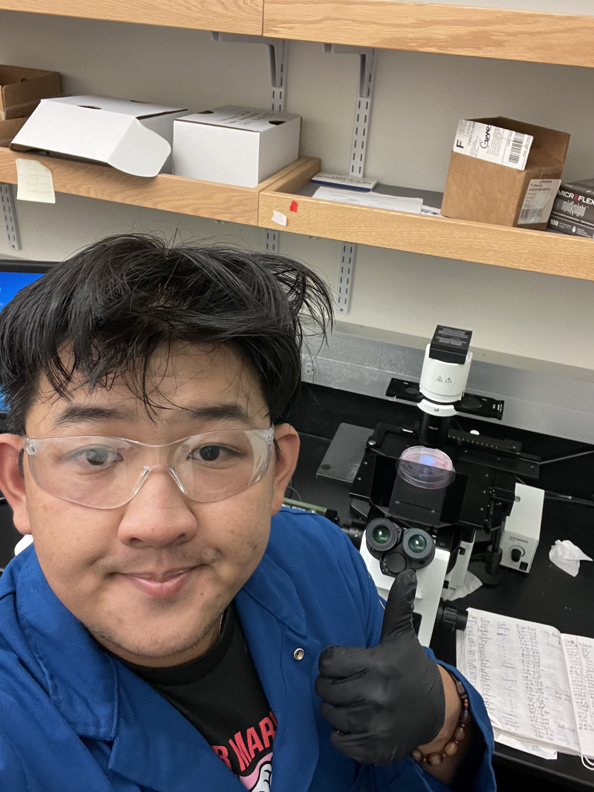
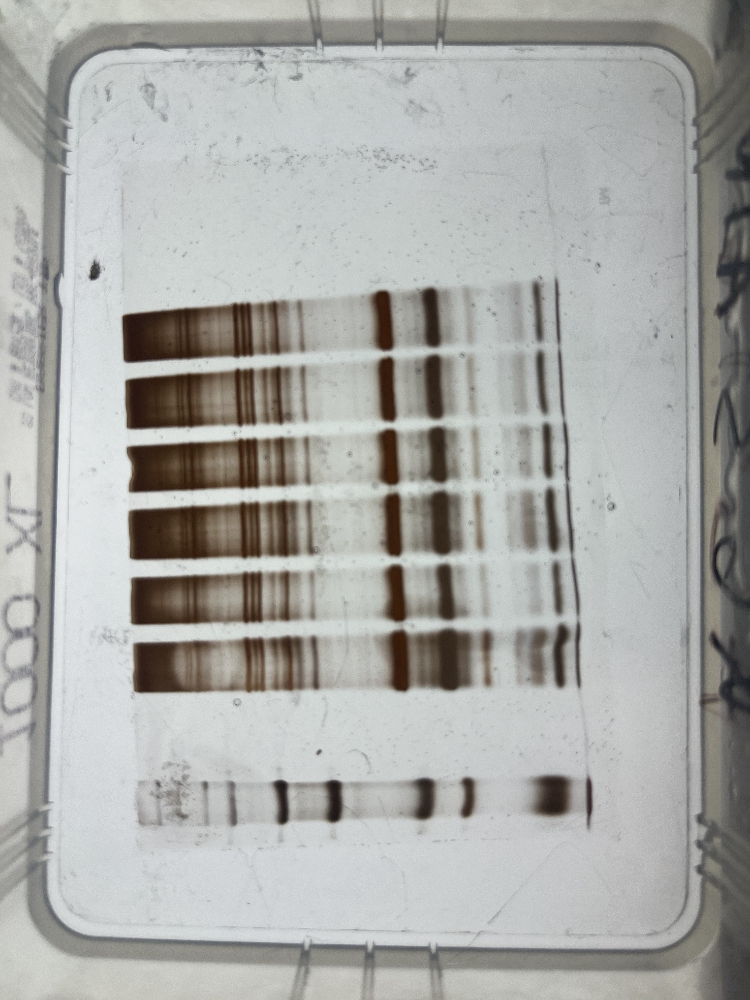
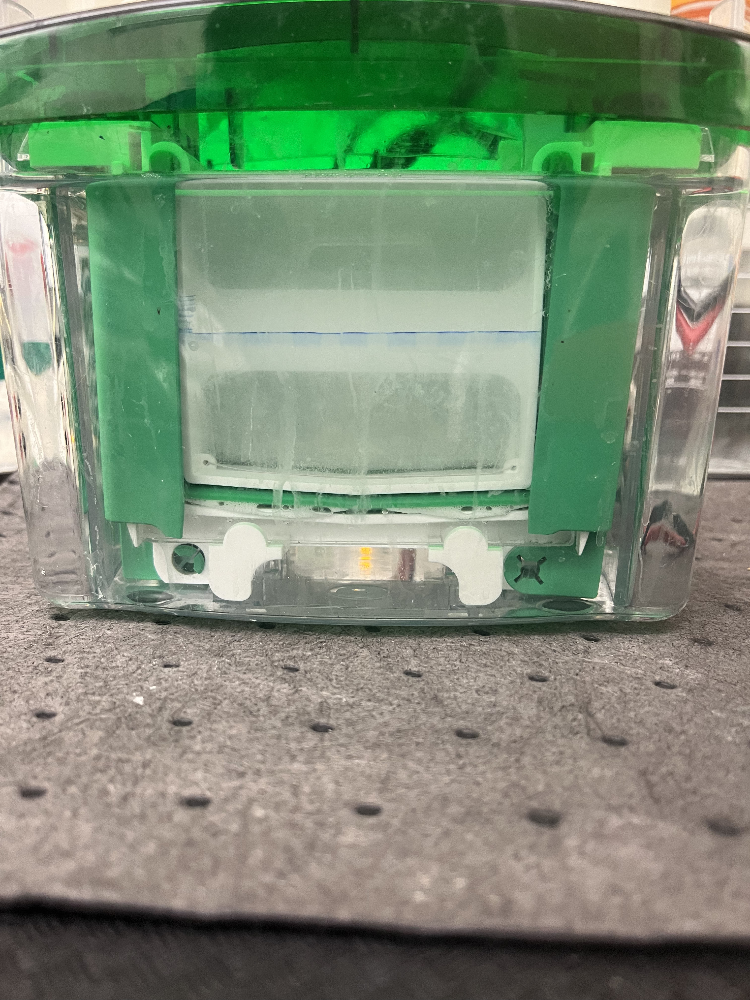
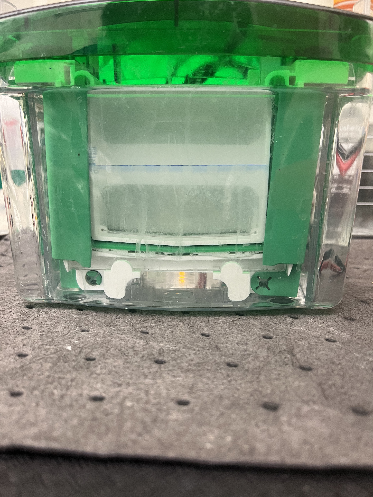
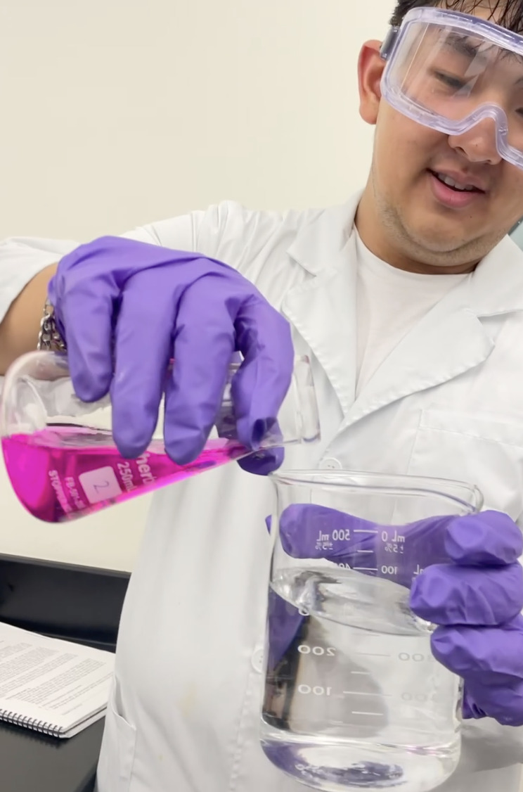
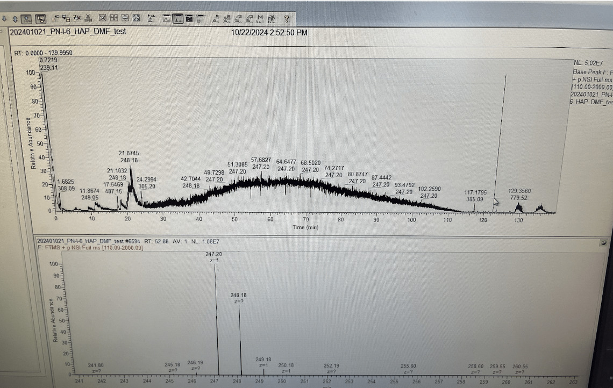
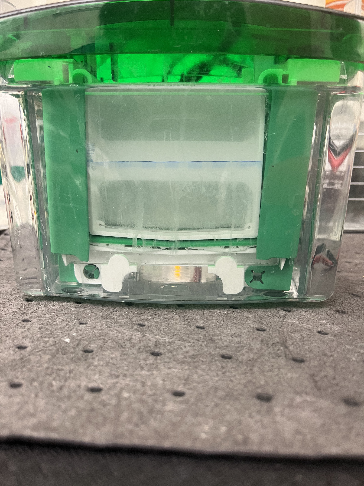
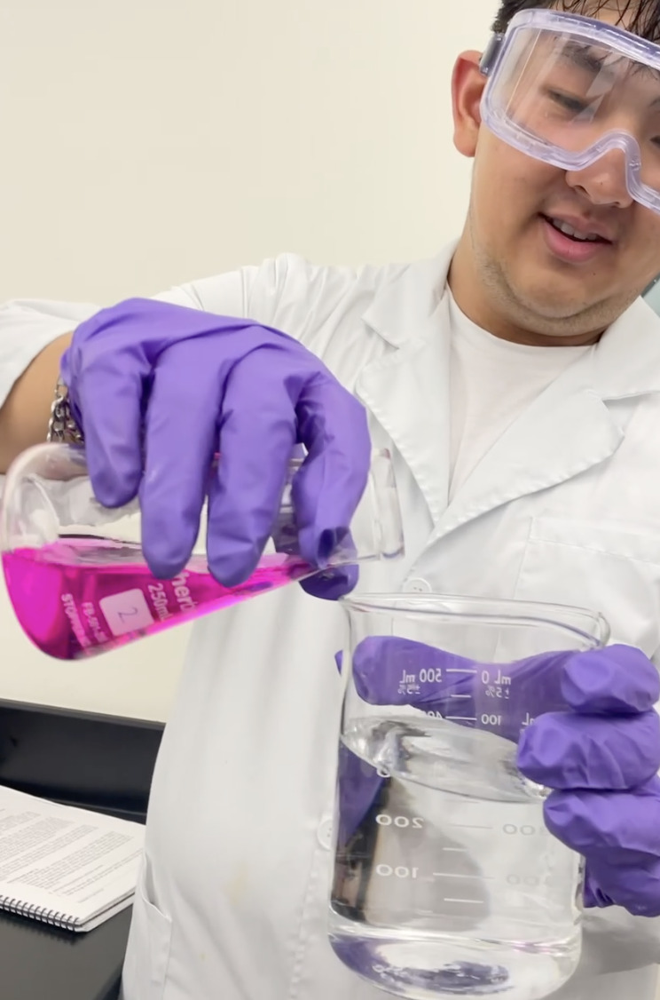
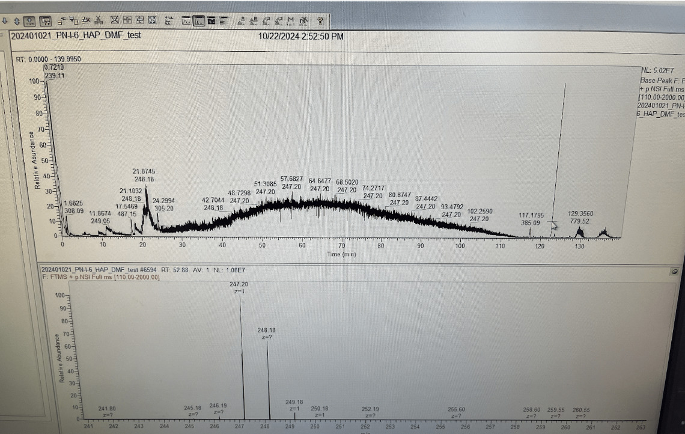

Phillipp Nguyen
Undergraduate Student studying Chemistry at University of California, Riverside: I am currently a fourth-year chemistry student at the University of California, Riverside, where my academic journey has been defined by a deep interest in analytical chemistry, biochemistry, and chemical biology. My coursework has provided me with a solid foundation in organic chemistry, physical chemistry, environmental chemistry, and advanced analytical techniques, while also fostering critical thinking and problem-solving skills. Inspired by my immigrant parents’ values of education and perseverance, I have consistently pursued academic excellence, achieving strong grades and developing a passion for research. My curiosity about the proteome, particularly in relation to proteostasis and its role in neurodegenerative diseases, has motivated me to explore the intersection of chemistry and biology, setting the stage for my aspirations to attend graduate school for a Chemistry PhD. In addition, I participate in clubs at UCR such as Vietnamese Student Association (VSA), Rides@UCR (Car Club), and Chemistry Club. Outside of UCR, I am currently a member of the American Chemical Society (ACS) and volunteer for Saint Joseph Monastery and Our Lady of the Desert Church.
Undergraduate Researcher for the Genereux Lab, in the Chemistry Department at University of California, Riverside: My research interests center on proteostasis, particularly protein folding, misfolding, trafficking, and the effects of cellular stress on these processes. My role as a researcher in Dr. Genereux's lab has been pivotal in shaping my scientific perspective and technical expertise. I have conducted weekly experiments involving western blotting, silver staining, and TMT 6-plex mass spectrometry to investigate protein folding, misfolding, and aggregation processes. Currently, I am researching the proteome that is misfolded due to cellular exposure to dimethyl fumarate, an approved drug used in treating multiple sclerosis, however, it is a poorly characterized mechanism of action. I follow up this experiment by assaying targeted proteins for chemical adducts, and with biochemical activity assays. These studies have deepened my understanding of proteostasis, enabling me to contribute meaningfully to ongoing research focused on cellular stress responses and their implications for neurodegenerative diseases. Regularly attending group meetings and delivering quarterly presentations have refined my ability to analyze data and communicate complex findings effectively. My hands-on experience has also instilled a sense of precision and creativity, allowing me to develop innovative approaches to challenging scientific questions.
Lab Manager for the Genereux Lab, in the Chemistry Department at University of California, Riverside: As the lab manager, I have embraced a leadership role that emphasizes organization, mentorship, and safety. I oversee daily operations to ensure that the lab maintains a clean, organized, and safe environment, adhering to EH&S and OSHA regulations. I also conduct DNA isolation and PCR. My responsibilities include conducting weekly inventory checks, ordering reagents and materials, managing hazardous waste, and maintaining critical equipment. Training and supervising undergraduate and graduate researchers has been one of the most fulfilling aspects of this role, as I have had the opportunity to guide them through protocols and techniques, fostering their growth as scientists. These experiences have not only enhanced my organizational and leadership skills but have also taught me the importance of teamwork and collaboration in advancing scientific discovery.
Experience
Cashier
• Maintain organization and cleanliness of store (mopping/sweeping floors, organizing shelves and items, cleaning bathrooms, cleaning registers)
• Working at the cash register, Responsible for checking out customers
• Experience with Customer Service, Handling large amounts of money, and Heavy Lifting
Undergraduate Researcher
• Conducted weekly experiments for western blotting, silver staining, and TMT 6-plex Mass Spectrometry to investigate protein expression
• Studied Hsp40 affinity using HEK293T cells, with a focus on DNAJB8 and its response to Dimethyl Fumarate and Atrazine to identify and quantify proteins and their post-translational modifications
• Conducted cell culture experiments to investigate the impact of cellular stress on protein folding, trafficking, and protein misfolding
Laboratory Manager
• Conducted weekly inventory checks and ordered lab materials and reagents
• Overseeing daily operations, ensuring there is a safe, clean, and organized environment
• Conducted DNA isolation and purification, optimizing yield and purity
• Trained and supervised undergraduate and graduate researchers in lab techniques and protocols, ensuring consistent and efficient lab operations
• Enforced and ensured compliance with protocols, rules, and regulations (e.g. EH&S, OSHA)
Education
UC Riverside
Portfolio


 



 